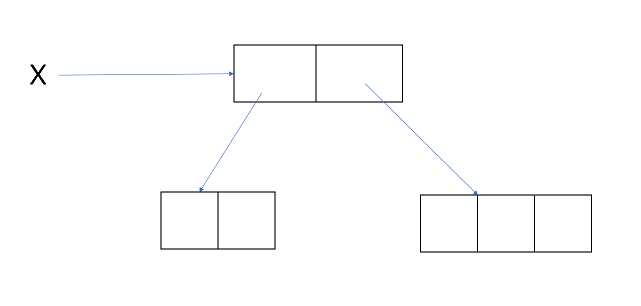
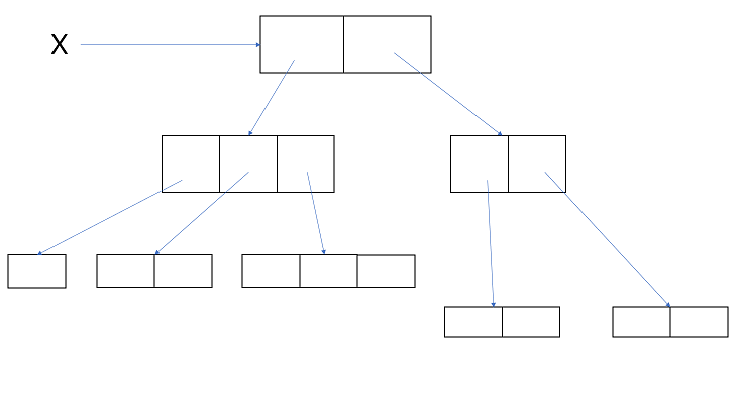
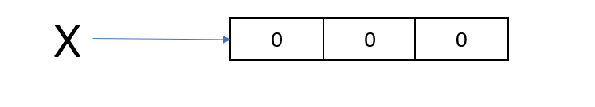
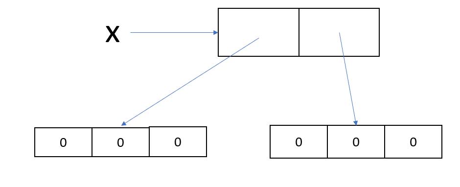

ARRAY in Java
- Introduction
- Array declaration
- Array creation
- Array initialization
- Array declaration,creation and initialization ia a single line
- length v/s length()
- Anonymous Array
Introduction
1.An Array is an indexed collection of fixed number of homogenous data type.
2.The main advantage of Array is we can represent huge number of values by using single variable.So,that the readability of code will be improved.
3.But the main disadvantage of Array is fixed in size i.e one we create an Array their is no chance of increasing or decreasing size base on our requirement.
Array declaration
1.One-dimensional Array declaration
int[] x;
* At the time of Array declaration we cannot specify the size,otherwise we will get compile time error.
int[5] x; (Invalid)
int[] a; (valid)
2.Two-dimensional ARRAY declaration
int[][] x;
3.Three-dimensional ARRAY declaration
int[][][] x;
Array Creation
int[] a = new int[SIZE];
1.Every ARRAY in Java is an object only.Hence,we can create an Array object by using 'new' keyword.
2.For every ARRAY type corresponding classes are available and this classes are part of Java language and not available to the programmer.
| Array type | Corresponding class name |
|---|---|
| int[] | [ I |
| int[][] | [[ I |
| double[] | [ D |
| short[] | [ S |
| byte[] | [ B |
| boolean[] | [ Z |
| and many more.... |
#Related to Array creation their are several conclusion:
1.At the time of ARRAY creation compulsory we should specify the size.Otherwise we will get compile time error.
int[] x = new int[]; (invalid)
int[] x= new int[8]; (valid)
2.It is legal to have an Array with size of zero in Java.
int[] x = new int[0]; (valid)
3.If you are trying to specify Array size with negative int value then we will get runtime exception saying:NegativeArraySizeException.
int[] x = new int[-3]; (invalid)
4.To specify ARRAY size the allowed data type are byte,short,char and int.If you are trying to specify any other type we will get compile time error.
int[] x = new int['a'];
byte b = 30;
int[] x = new int[b];
short s = 40;
int[] x = new int[s]; ( all examples are perfectly valid)
5.The maximum allowed ARRAY size in Java is 2147483647 which is the max. value of int data type.
int[] x = new int[2147483647]; s(valid)
#Array of Arrays Approach for multi-dimensional Array:
1.In Java two-dimensional Array is not implemented by using matrix style,Sun people followed 'Array of Arrays Approach' for multi-dimensional Array creation.
2.The main advantage of this approach is memory utilization will be improved.
example:1
int[][] x = new int[2][];
x[0] = new int[2];
x[1] = new int[3];

example:2
int[][][] x= new int[2][][];
x[0] = new int[3][];
x[0][0] = new int[1];
x[0][1] = new int[2];
x[0][2] = new int[3];
x[1] = new int[2][2];

Array Initialization
1.Once we create an Array every element by default initilise with default values.
int[] x = new int[3];
system.out.println(x[0]); o/p: 0

2.Whenever we trying to print any refrence variable internally String method will be called which is implemented by-default to return the string in the following form:
'classname@hashcode-in-hexadecimal form'
int[][] x = new int[2][3];
system.out.println(x); o/p:[[I@hashcode....
system.out.println(x[0]); o/p:[I@hashcode...
system.out.println(x[0][0]); o/p:0px

3.If you are trying to perform any operation on null then we will get runtime exception saying NullPointerException.
int[][] x = new int[2][];
system.out.println(x); o/p:[[I@hashcode..
system.out.println(x[0]);o/p:null
system.out.println();o/p:runtime exception:NPE

Array declaration,creation and Initialization in single line.
1.We can declare,create and initilize an Array in a single line,this is called shortcut representation of Array.
int[] x;
x= new int[3];
x[0]=10;
x[1]=23;
x[2]=30; are written in:
int[] x = {10,23,30};
we can also represent char and String Array and any type in shortcut method.
char[] ch = {'a','b','c','d'};
String[] s = {"Rinku","shivanshu","shivam","Rohit","vipul","tiwari"};
2.We can use this shortcut method of Array for multi-dimensional Array.
int[][] x = {{10,20},{30,40,50}};

3.If you want to use this shortcut compulsory we should perform all activity in a single line.If you trying to divide in multiple line we will get compile time error.
int[] x;
x ={10,20,30}; (we will get compile time error)
length v/s length()
1. length is a final variable applicable for Arrays which represent the size of an Array.
int[] x = new int[6];
System.out.println(x.length); o/p: 6 (this is size of an array)
2. length() is a final method applicable for String object which return the number of character present in the String.
String s = "katrina";
System.out.println(s.length()); o/p: 7 (this is number of character present in a String)
NOTE:
1. length variable applicable for Arrays but not for String objects.Whereas,length() applicable for String objects but not for Arrays.
2. In multi-dimensional Array length variable represent only base size but not total size.
Anonymous Arrays
1. Sometime we can declare an Array without name such type of nameless Arrays are called Anonymous Arrays.
2. The main purpose of Anonymous ARRAY is just for instant use(one time uses).
3. we can create Anonymous ARRAY as follows:
new int[]{10,20,30}
4.While creating Anonymous ARRAY we cannot specify the size,otherwise we will get compile time error.
new int[3]{10,20,30} (invalid)
new int[]{10,20,30 } (valid)
sample program:
class Test
{
public static void main(String[] args)
{
sum(new int[]{10,20,30});
}
public static void sum(int[] x)
{
int total = 0;
for(int x1:x)
{
total = total + x1;
}
System.out.println("Sum is:"+total);
}
}
*In the above example just to call sum method we require an Array but after completing sum method call,we are not using that Array any more.Hence,for this one time requirement Anonymous Array is the best choice.
5. We can also create Anonymous multi-dimensional Array.
new int[][]{{10,20,},{30,40,50}}
6.Based on our requirement we can give the name to Anonymous Array,then it is no longer Anonymous.
int[] x = new int[]{10,20,30};